Events
EventsAll events: when, where and how to play
Events run in the game all the time. Each one gives rewards — to you and to the alliance. Here every event is covered separately: what it is, when it runs, where to tap and how not to waste troops.

Special Event
The button at the top right. Inside: Survival Battle, Elixir Scramble, Quiz, Demon King, Thief Hunt, Cheese Trap.
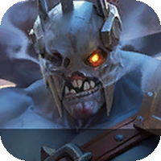
Every day
Demon King (except Sunday) and Survival Battle. Always do them.
Cheese Trap
Once every 2 days. The time is set by the alliance's R4 or R5.

Rally
In many events the monster is hit with a rally: one player starts it, the rest tap «Join».
Which event runs when
First the schedule, then the details for each one. Server time: it is 5 hours behind Moscow. A new game day starts at 00:00 server time, which is 05:00 Moscow.
Warlock — Mon and Thu · Ranger — Tue and Fri · Warrior — Wed and Sat

that is 05:00, 11:00, 17:00 and 23:00 Moscow

opens from server day 2, needs Sanctuary 7


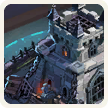


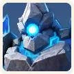


that is 14:00, 23:00 or 04:00 Moscow; the kingdom's 32 strongest alliances take part, Sanctuary 15+

requirements: be in an alliance, at least 15 alliance members with Sanctuary 15+ signed up

the first time — around server day 20; in the other week «Pandemic Experience» runs on these days; Lion Coins don't burn until the next time

how often it repeats — not known yet

the difficulty chosen at the start doesn't change until the end of the event; clear it fully — next time the next one opens

how often it repeats — not known yet

1 free coin arrives every day; there are two wheels: with heroes and with Raven resources

the Blighted Countess is part of it
after the Era of Revival begins, «Claire's Inner Demon» takes its place

from Sanctuary 6; 15 questions, Diamonds even for a wrong answer

pickaxes for quests, quests refresh at 00:00 server time (05:00 Moscow); how often it repeats — not known yet

1 free adventure a day
How to know in advance when an event comes: the city has a ribbon at the Monument — it shows on which day an event arrives. Days are counted from the server opening, so the weekday can differ between servers. Where it says «not known yet» — if you know how often the event comes, tell us and we'll add it.
All events on one page
Elixir Scramble
every week, battle on Friday, 30 minutesAlliance against alliance, 20 vs 20. Capturing buildings on a separate map.
Thief Hunt
once every 2 weeks, 3 days (Wed–Fri)Instead of Blight you catch gold thieves and hit their leader with a rally.
Cheese Trap
once every 2 days, 30 minutesThe alliance lures the Rat into a trap and hits it with rallies.
Demon King
every day except SunA world boss: 10 hits a day. Gives the kingdom Kingdom War points.
Survival Battle
every day4-hour rounds, each with its own theme. You compete with players of your level.
Quiz
every SundayQuestions about the game. Ready answers below.
Crystal Cluster Valley
Sunday, 4 timesCollect crystals: hit rats and dig mines. At the end — «king of the hill».
Hunt Battle
on R4/R5 command5 waves of Blight with a boss after each wave.
Wandering Phantom
1 dayHit the huge Wandering Blight that roams the map.
Pandemic Experience
3 daysKill 30 nurses of levels 1 to 30 and the Rat Doctors as an alliance.
Undead Siege
on R4/R5 commandWaves of monsters attack your city. Shields don't work.
Canyon Conquest
every week, from the server's 3rd weekSign up — and the battles run by themselves. 3 lanes, you need to win 2.

Expeditions
reset Tue, Thu, SunExpedition Battle by faction, Alliance Expedition, Campaign.
Gear Upgrade
Saturday and SundayUpgrade heroes' gear — get a reward.
Recluse Merchant
7 daysA shop for event coins. The first item is always free.
Blighted Countess
during «Celia's Hunting Day»Celia's event monster, 12 levels. Hit only with an alliance rally.
Wishing Wheel
every dayA roulette for «Wish Coins». A «Blessing Wheel» sometimes runs alongside.

Celia's Hunting Day
2 daysHit level 1–20 Blight with rallies, get «Celia's Chest».
Shadow Blight
Mon and Thu, 4 runsA separate event, not the regular boss: 3 hours each, 5 attacks instead of 10.
Dwarven Mine
pickaxes once a dayYou dig floors. Before digging, pick the floor reward.

Surprise Encounter
once a day for freeAn adventure for Diamonds. You can't store more than 4 chests.
Kingdom War
Saturday 17:00 MoscowOur kingdom against another. A separate section.
Holiday events
on holidaysHalloween, the moon festival, pirates, Easter, a banquet, Christmas and New Year.
Alliance Duel
Mon — SatAlliance against alliance, 6 themes. A separate section.
Elixir Scramble
Two alliances of 20 players each go to a separate map. Capture buildings — points drip in. After 30 minutes the side with more points wins. Troops don't die here: after the battle all troops come back as they were. A win during Kingdom War gives our kingdom 50,000 points.
Where to find it — step by step
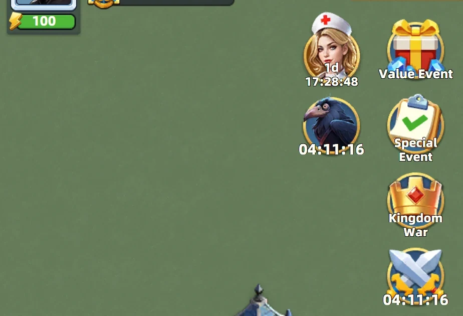
The «Special Event» icon
On the right of the main screen, in the column of round icons — second from the top (a clipboard with a checkmark). The «Event» window opens with tabs at the top.
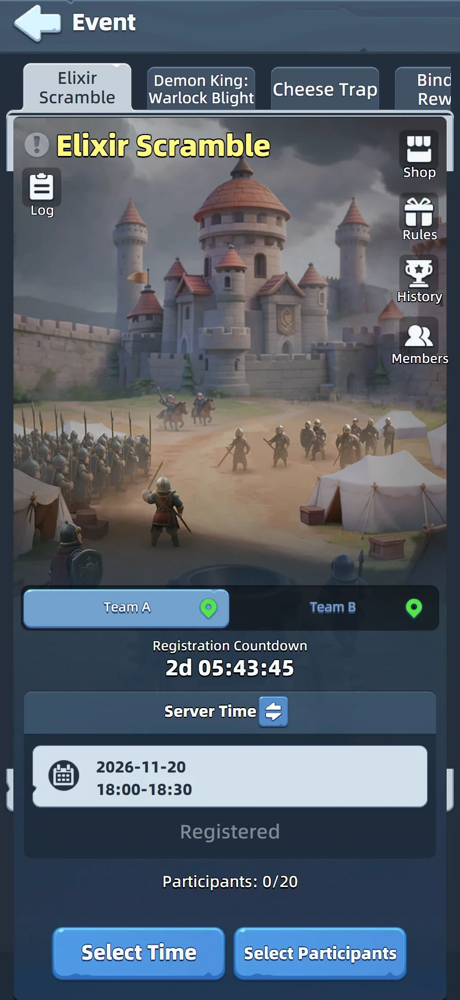
The «Elixir Scramble» tab
The first tab. This is how the window looks during sign-up: «Team A» / «Team B», the countdown to the end of registration, the battle day and time (the «Server Time» toggle), «Registered» — the alliance is signed up, and how many participants of 20 are chosen. At the bottom are the leaders' (R4/R5) buttons: Select Time and Select Participants. On the right «Shop», «Rules», «History», «Participants», on the left «Record».
After matchmaking (on Thursday) our alliance versus the rival appears here instead.
When 5 minutes are left before the battle, an Enter Battlefield button appears at the bottom — it takes you to the event map. Leaders sign up with the «Register», «Select Time», «Select Participants» buttons.
How to get in
Alliance leaders choose 20 main participants and 10 substitutes. Main ones go in first. After sign-up the list closes. Applications are usually collected until Thursday.
They come in handy if Healing Tents aren't enough.
Top right «Special Event» → «Elixir Scramble». You are moved to your zone on the map: ours are blue, enemies red. Nobody touches you in your zone.
The game picks the rival by the total Might of the signed-up participants (the highest Might they ever had is used).
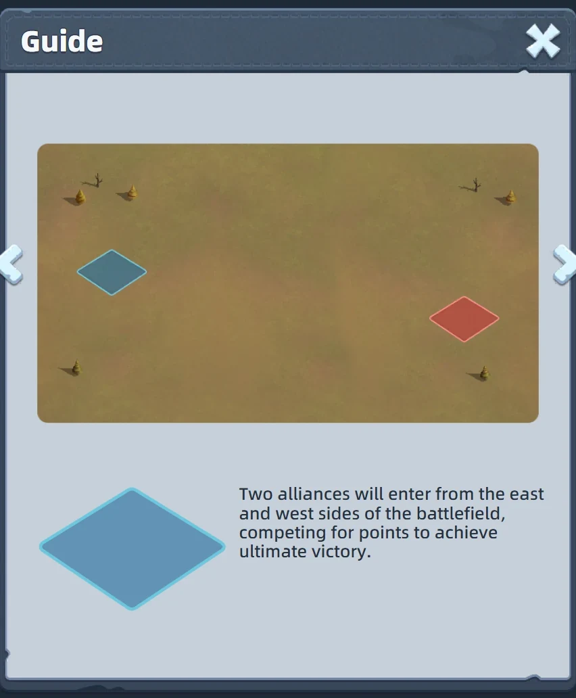
The in-game «Guide» window: ours enter from the west (blue), enemies from the east (red).
What happens minute by minute
We enter our zones. Nobody can attack us.
Alchemy Workshops, Migration Portals, the Observatory and Healing Tents are open.
The Elixir Castle, War Relics and the Cursed Altar open in the center.
Herb camps appear — gathering also gives points.
What the buildings give
This is the game's own window: in the event window, the «Rules» button on the right → the Building tab. «Alliance» — how many points per second the building gives the alliance, «Personal» — to you while your squad is in it.
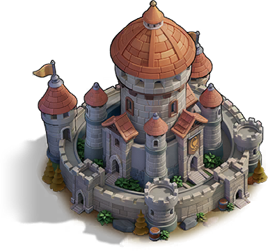
Elixir Castle
In the center, opens at minute 10. Gives the most points. By minute 10 all strong players should be near the center.
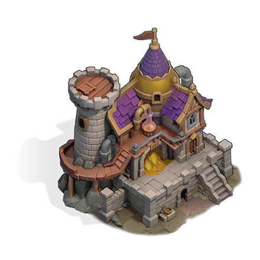
Alchemy Workshop
Two of them, at each alliance's entrance. Give lots of points constantly — take them first.
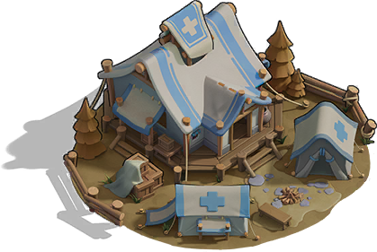
Healing Tent
4 of them. A few points, but the main thing — heals 15 of your wounded every 10 seconds. Collect the healed at the bottom left by tapping the green button.

Migration Portal
Open at the start of the battle. While they are ours, the map relocation cooldown is halved.
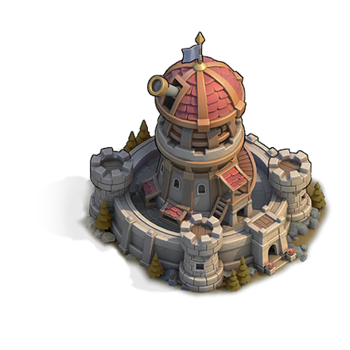
Observatory
Opens at the start of the battle. Capturing it gives +10% to alliance points from all buildings we hold.

War Relics
Open at minute 10. While they are ours, our heroes get +15% attack, defense and HP.
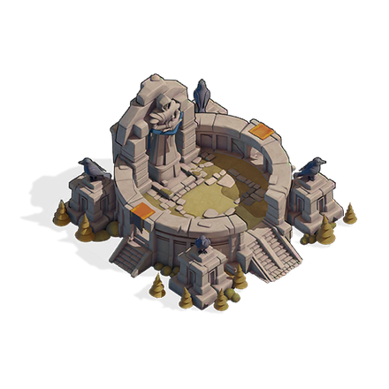
Cursed Altar
Opens at minute 10. While it is ours, enemy heroes get −15% attack, defense and HP. If the enemy is stronger, the altar is our main chance.
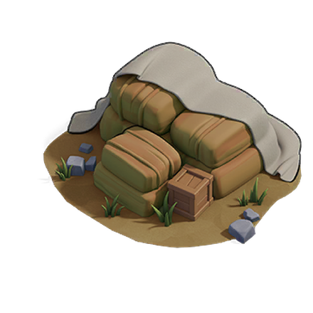
Camps and first-aid kits
From minute 13 send your weakest squads to the camps for Herb — that's points. First-aid kits appear around captured buildings — picking them up also gives points.
The event map — step by step
This is the game's own «Guide» window (in the event window — the «Rules» button, the «!» icon). Flip with the arrows — buildings light up on the map one by one.
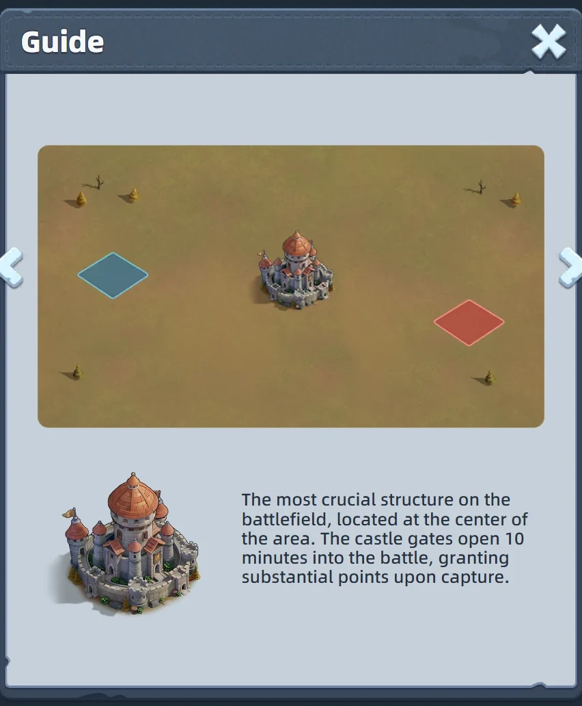
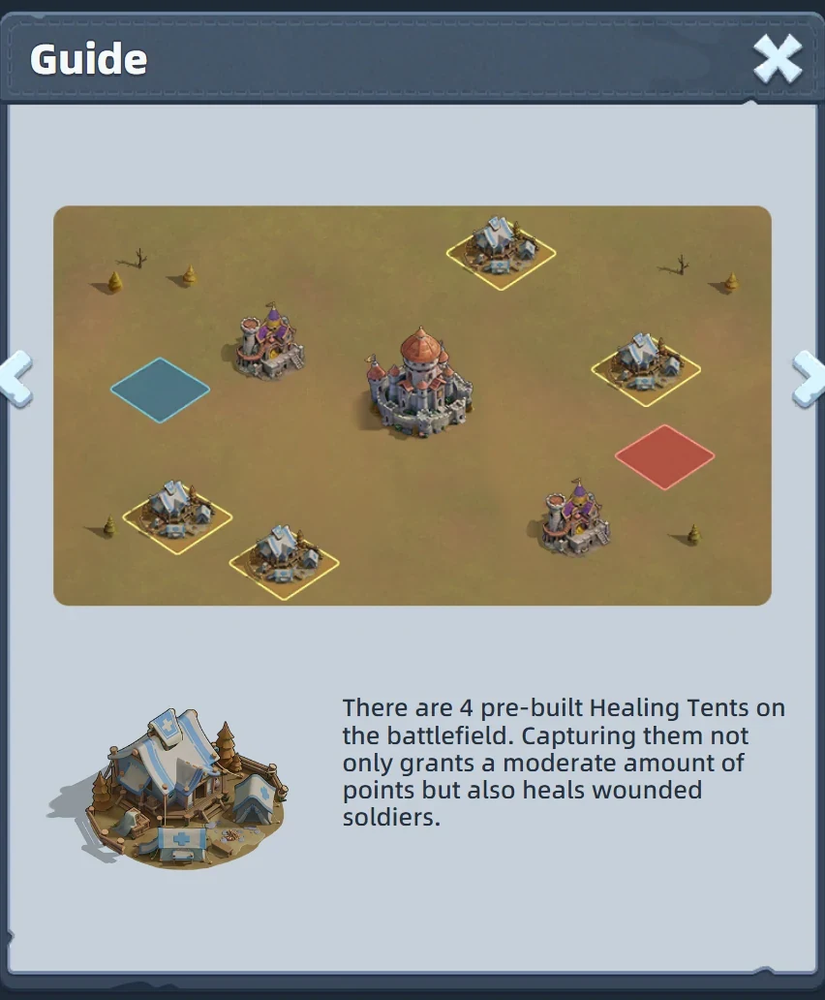
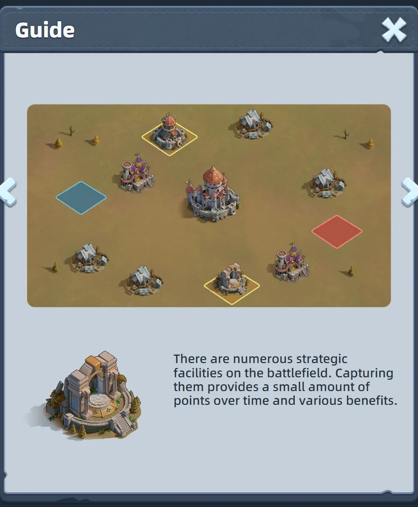
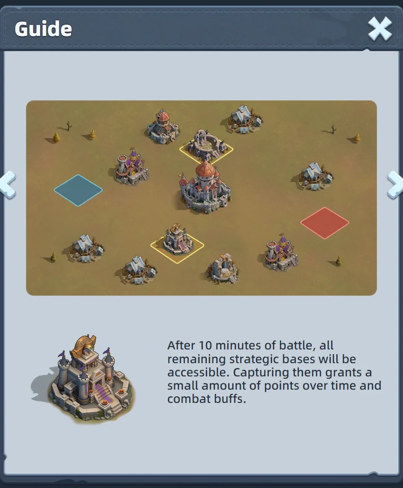
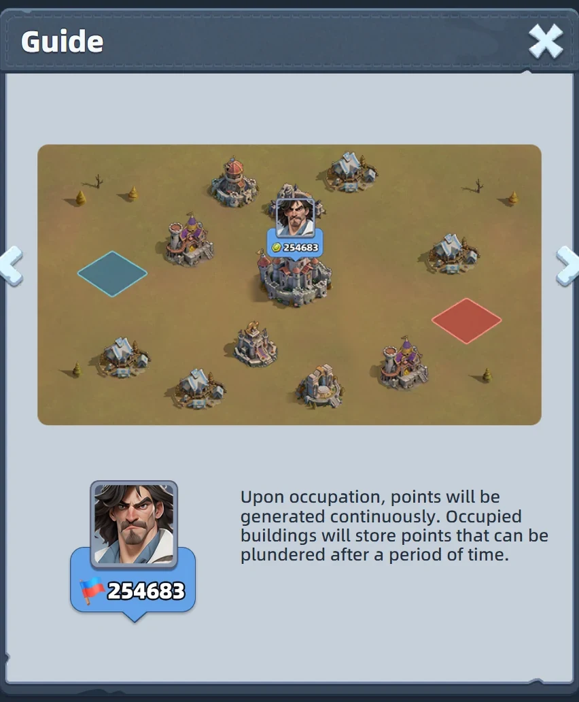
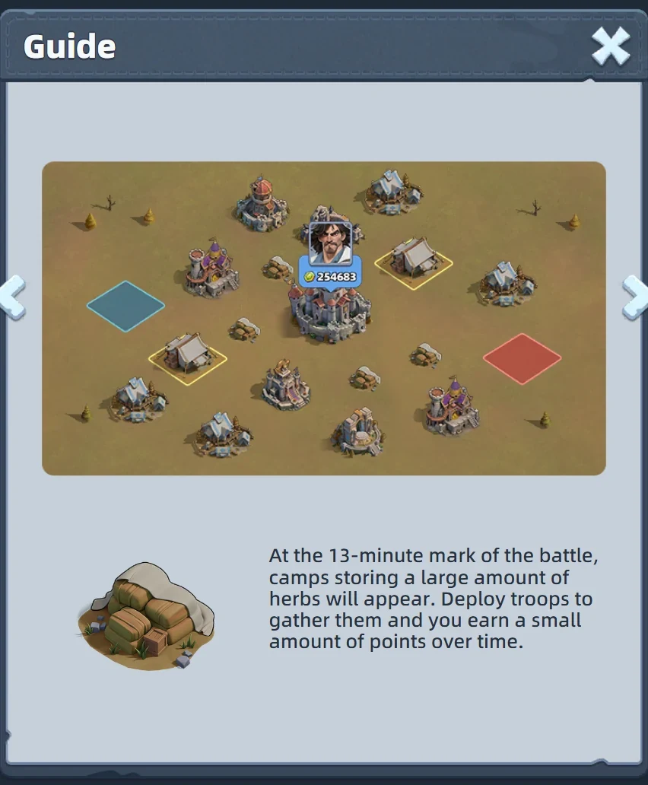
Tactics — how to win
A gray building is nobody's: just send a squad. A red one is the enemy's: first knock them out with a rally. A solo attack on an occupied building wastes troops.
The more of our squads inside, the harder it is for the enemy to retake it.
Team 1: Alchemy Workshop, Migration Portal, from minute 10 — the Elixir Castle. Team 2: Healing Tents (hold at least 2 of 4) and the Cursed Altar. If there are 15 or more of us — a third team burns enemy cities.
Don't queue healing for everything at once: heal as much as your speedups can cover, otherwise they get stuck.

The main trick — burn enemy cities.
Each city in the event has 5,000 durability. Each successful attack removes 1,000. After 5 attacks the enemy city flies back to its base — together with all its squads. If it held a building, its squads disappear from there, and the building can be taken without a fight.
Almost nobody keeps troops on the wall, so even a weak player can «burn» a strong one. Relocating on the map is once every 3 minutes, and the burned player waits while we collect points.
Thief Hunt
For three days (Wednesday to Friday, once every two weeks) Gold Thieves appear on the map. You catch them — get Lion Coins and spend them in the event shop. There are also good Raven rewards here: Raven Essence and gear.
Where to find it — step by step
The «Special Event» icon
On the right of the main screen, in the column of round icons — second from the top (a clipboard with a checkmark). The «Event» window opens with tabs at the top.
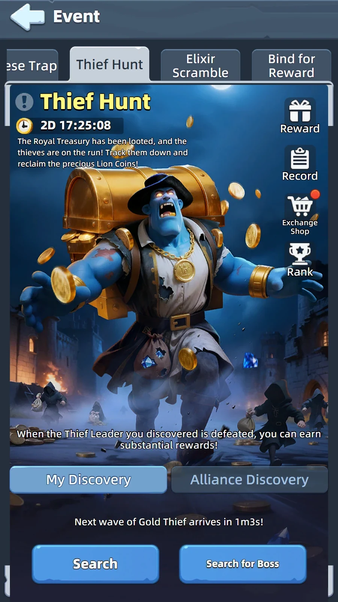
The «Thief Hunt» tab
At the top — how long until the event ends. In the middle — the «My Discovery» / «Alliance Discovery» toggle. At the bottom — the Search (nearest Gold Thief) and Search for Boss (Thief Leader) buttons. On the right — «Reward», «Record», «Exchange Shop» and «Rank».
Who is who in the event
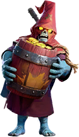
Gold Thief
Arrives on the map in waves: at the bottom of the event window is the timer «Next wave of Gold Thief arrives in…». The rewards window gives the wave level range — 5–75. The «Search» button finds the nearest one — level 5, one squad beats it. Each one gives Lion Coins.

Thief Leader
Appears when you beat Gold Thieves: the alliance chat gets «…defeated the Gold Thieves. A Lv. N Thief Leader has appeared». To find it — the Search for Boss button. It is much stronger — hit it with a rally. At first it has a protection period for its own alliance to clear it. The finder and the commander of the winning rally get separate rewards.
What to do
The button at the bottom left of the event window (framed in the picture above). The game shows the nearest level 5 Gold Thief.
A new wave of Gold Thieves arrives by the timer at the bottom of the window — that's when there are the most thieves on the map.
«Search for Boss» leads to the Thief Leader. Gather an alliance rally before someone else grabs it.
Damage ranking rewards arrive by mail after the event ends.
Cheese Trap
The alliance sets a cheese trap, the Cheese Thief (a rat) gets caught in it, and everyone hits it with rallies. The fight lasts 30 minutes. The more damage — the better the rewards for everyone and for the alliance. A good source of Antitoxin and Raven materials.
Where to find it — step by step
The «Special Event» icon
On the right of the main screen, in the column of round icons — second from the top (a clipboard with a checkmark). The «Event» window opens with tabs at the top.
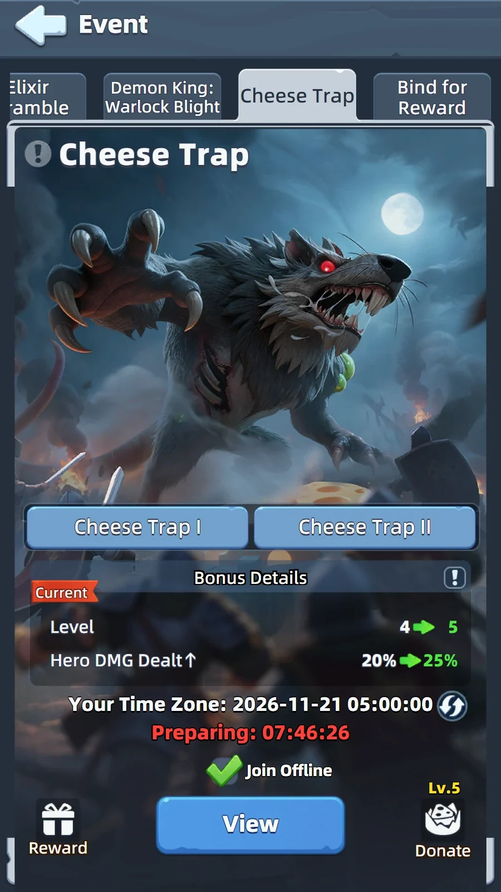
The «Cheese Trap» tab
The «Cheese Trap I» / «Cheese Trap II» toggle, below it «Bonus Details» — the boost level from donations and the damage bonus. At the bottom: Reward, the big View button (takes you to the trap on the map) and Donate — at the bottom right, where Mouse Lures go.
How it works
R4 or R5 choose trap I or II, the level and the start time. Choosing one locks the other. At least 20 participants are needed. If it isn't scheduled by 22:00 game time (03:00 Moscow) on the last day, the trap is lost.
The Donate button at the bottom right of the event window (framed in the picture above). You get Alliance Coins for it, and the trap gets more damage. Up to the limit the boost grows, after that only coins are given.
The Rat gets caught, and the alliance has 30 minutes. It can only be hit with rallies.
Tap the trap → «Rank»: it shows how much personal damage the rewards need and how much you have dealt. Reached the bar — stop. If you hit for all 30 minutes you just lose troops: the Rat hits harder with each phase, and rewards above the bar don't grow.

Whose rally hits harder. The game gives a damage bonus to rallies started by alliance leadership: a rally by R5 or a titled R4 — +5% damage, by an untitled R4 — +2.5%. So join the leaders' rallies instead of starting your own.
The «Join Offline» button. In the trap window you can turn on «Join Offline». Then, while you are out of the game, your strongest squad joins a rally by itself 20 seconds before the gathering ends, if there is room. The game honestly warns: this may lead to troop losses. Turn it on only if you are leaving and your Infirmary is empty.
Personal damage
Tap the trap → «Rank»: it shows how much damage is needed and how much you have dealt. Reached the bar — stop. Whoever dealt the most damage in the alliance gets 1–10 times more alliance rewards.
Difficulty
Each new Rat level is about 4 times harder. Raise the level wisely: more troops are lost.
Healing
Heal troops after each attack so the Infirmary doesn't overflow. With alliance help it's quick.
Demon King (world boss)
Where to find it — step by step
The «Special Event» icon
On the right of the main screen, in the column of round icons — second from the top (a clipboard with a checkmark). The «Event» window opens with tabs at the top.
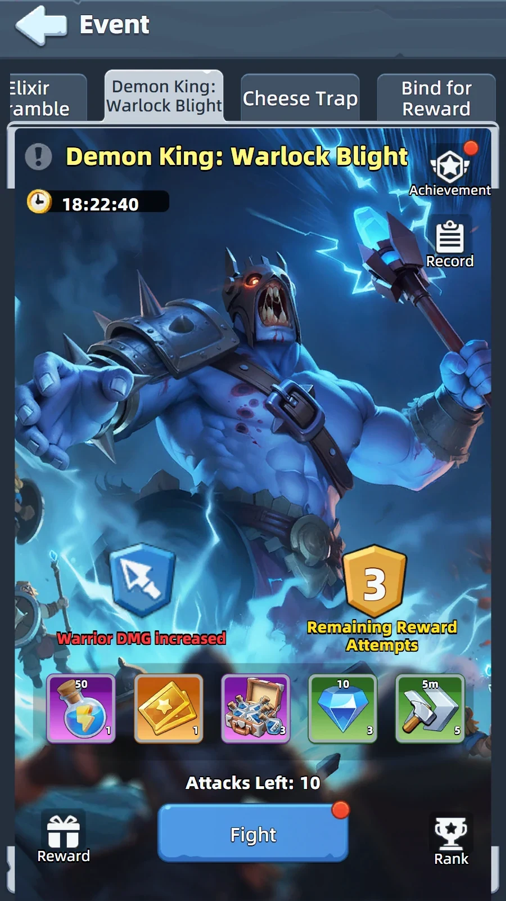
The «Demon King: Warlock Blight» tab
The tab is named after today's boss: «Warlock Blight», «Ranger Blight» or «Warrior Blight». The window shows how long until the day ends, which faction gets the bonus, «Attacks Left» and the Battle button: it takes you to the boss on the map.
A boss on the world map. You need Sanctuary level 8 or higher. 10 attacks a day, no rallies — you hit only by yourself. The daily ranking counts your strongest single hit. The number of attacks also gives rewards.
The Demon King doesn't hit back, so you don't need tanks against him — only damage.
| Day | Demon King | Hit with heroes |
|---|---|---|
| Mon, Thu | 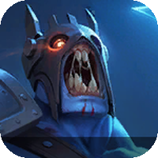 Warlock Blight | Warriors |
| Tue, Fri | Ranger Blight | Warlocks |
| Wed, Sat | Warrior Blight | Rangers |
Which faction hits harder is written in the game itself, in the event rules. But how much harder, the game doesn't say: the «+50%» figure circulates in player guides, but we couldn't confirm it in the game. Always follow the faction, but don't rely on an exact percentage.
How to build a squad — in Squads → Demon King.

Trick: if your squad is on a long march far away, send it to attack the Demon King — the trip to the demon and back shrinks to 30 seconds. That's a quick way to bring a squad home.

Before hitting, scout any target — «War Frenzy» turns on and the hit is stronger. Check that it is lit, then hit.
During Kingdom War the damage of the kingdom's top 200 players is added up. The kingdom with more damage gets 250,000 points.
Shadow Blight
Where to find it — step by step
The «Special Event» icon
On the right of the main screen, in the column of round icons — second from the top (a clipboard with a checkmark). The «Event» window opens with tabs at the top.
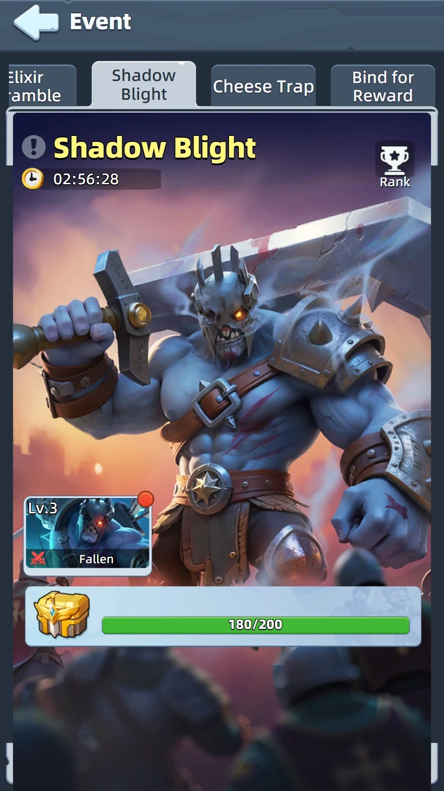
The «Shadow Blight» tab
The window title in the game is «Shadow Blight». At the top — the countdown to the end of the run, at the bottom — which boss is on the map now and how much HP it has. On the right — «Rank».
What to know
This is a separate event, not the regular Demon King. In the game it has its own window, its own rewards and its own mail (a Shadow Blight kill reward).
When: Monday and Thursday, four runs a day — at 00:00, 06:00, 12:00 and 18:00 server time (that is 05:00, 11:00, 17:00 and 23:00 Moscow). Each run the boss stays on the map for 3 hours, then disappears until the next one.
How it differs from the regular one: here you get 5 attacks a day, not 10. Rallies are also forbidden, Sanctuary 8 is needed. The ranking is by the strongest single hit of the day.
It is easier to track the boss through the event window itself: it shows «Attacks Left» and the countdown to the next appearance.
Hunt Battle
Where to find it — step by step
The «Special Event» icon
On the right of the main screen, in the column of round icons — second from the top (a clipboard with a checkmark). The «Event» window opens with tabs at the top.
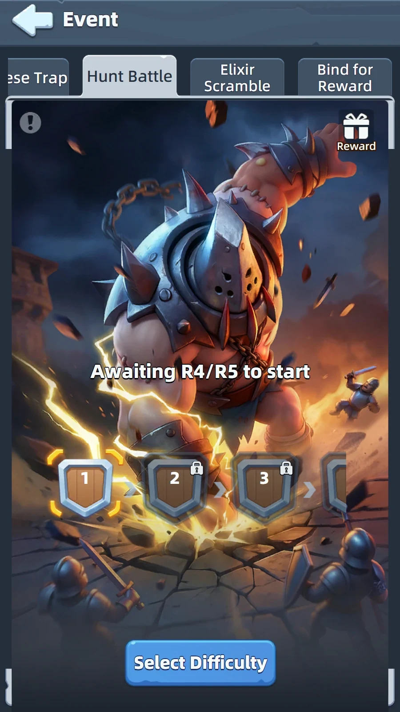
The «Hunt Battle» tab
Until R4/R5 start it, the window says «Awaiting R4/R5 to start». In the middle — difficulty tiles 1–5: the chosen one is outlined in gold, locked ones are not open yet. The leader taps Select Difficulty — at the bottom center, picks a level, and the battle starts. Rewards for the chosen difficulty — the «Reward» button at the top right.
How the battle goes
It is started by R4 or R5, and only if the alliance has more than 20 members. Per event an alliance can start the battle once and choose only one difficulty level — no do-overs.
After launch there are 5 minutes to prepare: Blight clusters appear on alliance territory. Then come 5 waves, each harder than the last. The more Blight you managed to kill, the better the rewards.
An important concession: in this event the march and return time of troops is fixed — 15 seconds. So you can take part even if your city is far from alliance territory. No need to relocate.
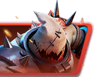
This button appears on the left of the screen while the battle is on. Tap it — the game shows whom to hit.- Don't all run at one target as a whole alliance.
- Heal troops between waves.
- After the 5th wave collect the reward in «Special Event».
Undead Siege
Where to find it — step by step
The «Special Event» icon
On the right of the main screen, in the column of round icons — second from the top (a clipboard with a checkmark). The «Event» window opens with tabs at the top.
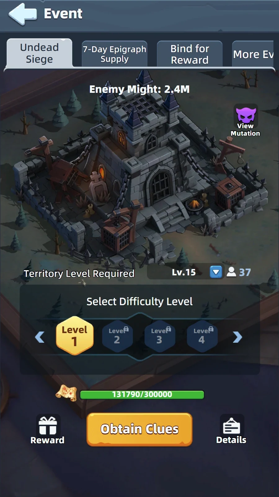
The «Undead Siege» tab
At the top — «Enemy Might»: how strong the monsters are at the chosen difficulty. In the middle is the death prison (until it is found, fog and the text «The death prison is shrouded in fog» are shown instead). Below — the «Required territory level» and difficulty choice: the gold hexagon is the chosen level, locked ones are not open yet (they open when 20 alliance members repel all waves of the previous level). The bar with a scroll — how many clues of 300,000 are collected. At the bottom: «Reward», the yellow «Get hints» button (frame) and «Details».
How it works
The alliance collects «Prison Clues» for Falcon Quests. Reached 300,000 — R4/R5 launch the event (once every 2 days). Monsters attack everyone's city in waves, up to 20 waves.
Shields don't work. Your squads must be on the wall — once your defense is broken, the event is over for you. Those whose defense was broken can send reinforcements to others.
Important: before the Duel raid day squads are taken off the wall, and for the Siege they must be put back — don't forget.
Wandering Phantom
Where to find it — step by step
The «Special Event» icon
On the right of the main screen, in the column of round icons — second from the top (a clipboard with a checkmark). The «Event» window opens with tabs at the top.
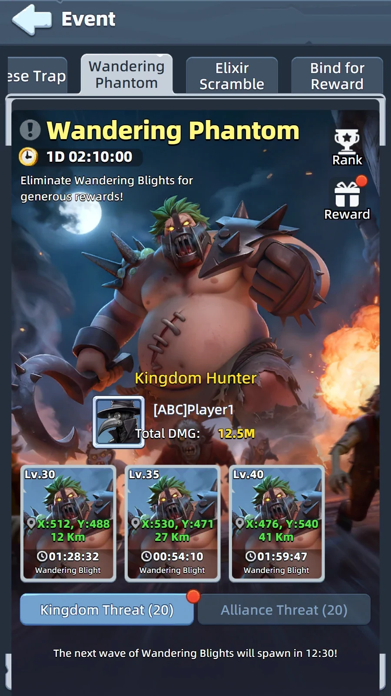
The «Wandering Phantom» tab
At the top — how long the event lasts. «Kingdom Hunter» — the player who dealt the most damage. Below is the list of Wandering Blights on the map: level, distance, how long it has left to live and coordinates — tap one to go to it. Tabs «Kingdom Threat» and «Alliance Threat». At the very bottom — when the next wave appears.
What to know
Lasts 1 day. You need Sanctuary level 8. You hit the Wandering Blight — a huge monster that roams the map and attacks cities.
If it breaks your defense, the city stays in place (it isn't thrown out), and losses among idle troops are lower than usual. The first-kill reward can be taken up to 3 times per event.
At the bottom of the event window is the list of such monsters in the kingdom; new ones appear every 10 minutes. Don't hit ones you can't handle.
Survival Battle
Every day at 00:00 game time (05:00 Moscow) the game puts you into a group with 12–20 players of a similar Sanctuary level. The day is split into 4-hour rounds, each with its own theme. Earn the theme's points — unlock rewards. 1st place in the group during Kingdom War gives the kingdom 2,200 points.
Where to find it — step by step
The «Special Event» icon
On the right of the main screen, in the column of round icons — second from the top (a clipboard with a checkmark). The «Event» window opens with tabs at the top.
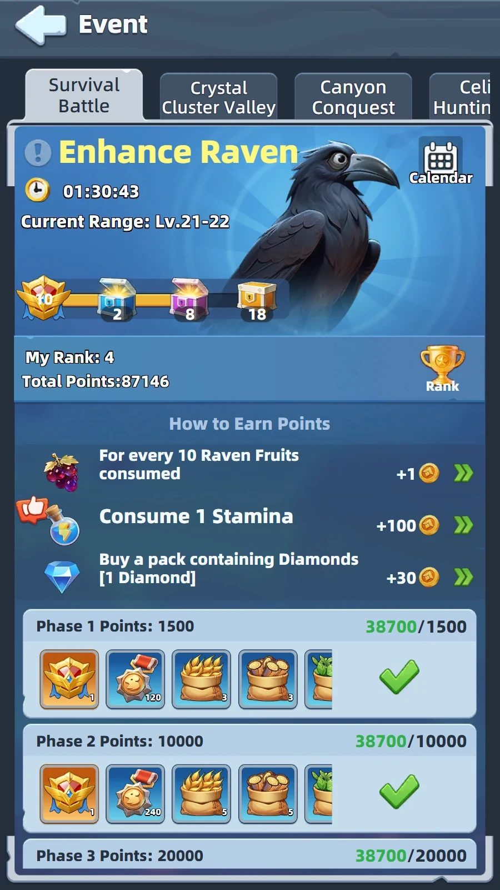
The «Survival Battle» tab
The first tab. At the top — the current round's theme («Raven Enhancement» in the picture), how long until it ends, and «Levels: 21-22» — players of which Sanctuary level are in your group.
The chest bar (frame on the left): the number on the medal is how many stage rewards you have taken today; chests open at 2, 8 and 18 rewards. «My Rank» and «Total Points» — your place in the group for the day, the full list is the «Leaderboard» (frame on the right). At the top right — the rounds «Calendar».
Below is «How to get points» — what counts in this round (a thumbs-up marks the best way), and the stages: reach a stage's points — collect its rewards, collected ones are checked.
Round themes and points
| Round theme | What gives points |
|---|---|
 Raven Enhancement Raven Enhancement | 10 Raven Fruit — 1 point; 1 Stamina — 100 points; a pack with Diamonds — 30 points per Diamond |
 Enhance Hero Enhance Hero | Recruiting a hero — 400; every 1,950 Antitoxin — 1 |
 Build Territory Build Territory | 1 minute of building speedup — 10; +1 building Might — 1 |
 Train Soldiers Train Soldiers | 1 minute of training speedup — 10; 1 soldier — 22 |
| Technology Research | 1 minute of research speedup — 10; +1 tech Might — 1 |
Combine it with the Alliance Duel. Spend the Duel day's items in the Battle round with the same theme — points go to both events. For example, on Monday feed the Raven exactly in the «Raven Enhancement» round.

Don't do all Battle quests every day without thinking — nothing will be left for the Duel. Each round has 4 rewards, and 2, 8 and 18 rewards a day unlock extra chests.
Quiz answers
Answers the game accepts (collected by players). Press Ctrl+F and type the start of the question to find it fast. The questions are in Russian alphabetical order; where the game has an English version of the question, its English text is used.
The faction answers match the game's own hint (the Arena window): «Warriors take 20% less damage from Rangers», «Rangers — from Warlocks», «Warlocks — from Warriors». So Warrior beats Ranger, Ranger beats Warlock, Warlock beats Warrior.
Questions — in alphabetical order (of the Russian version).
| Question | Answer |
|---|---|
| Arthur (tank) should be placed in the back row of the formation | Incorrect |
| On which days is the Alliance Duel event not held? | Sunday |
| Which building produces Antitoxin in the game? | Antitoxin Workshop |
| What are items from the Weaving Workshop used for? | Crafting gear |
| What is the function of Antitoxin? | Enhances or upgrades hero |
| What is the purpose of Curios? | Both of the above |
| What is the Caravan slot responsible for? | Squad size |
| Does the Covert Operation take up a march queue? | No |
| Researching Alliance Duel technology can increase the points gained per Alliance Duel. | Correct |
| Which faction does Marlena belong to? | Warrior |
| How is Blight transmitted to Warriors? | Flea bite |
| What are the ways to obtain Copper Coins? | Collect in the Sanctuary |
| How to raise squad power after a failed expedition? | Both of the above |
| How to pick heroes for maximum damage when building a formation? | 5 members from the same faction |
| How do you enhance the rewards obtained from the Explorer's Camp? | Clear more stages |
| What is the weekly Alliance Duel theme on Mondays? | Enhance Raven |
| What is the weekly Alliance Duel theme on Wednesdays? | Technology research |
| What is the weekly Alliance Duel theme on Thursdays? | Enhance Heroes |
| What benefits can Alliance members provide? | Both of the above |
| Which quest rewards can the Survivor Freya improve? | Falcon Quest |
| Which methods do not boost squad Might after defeat? | Recruit Survivors |
| What buffs are not unlocked by raising your VIP level? | Enhance Soldier Stats |
| What is the chance of getting an SSR reward in hero recruiting? | 0.17 |
| What is the Raven's role in the game? | All of the above |
| What is the purpose of donating Mouse Lures in the «Cheese Trap» event? | Increases the player's damage |
| What is the primary use of the plague doctor's staff? | Keep a distance from patients |
| Question | Answer |
|---|---|
| What are the benefits of a high Barracks level? | Increase the soldier limit |
| Which gear does Gearstone produce? | Smelting Workshop |
| Which of the following heroes is of UR quality? | Celia |
| What is the interval between the two daily Stamina claims? | 4 Hours |
| What is Shadow's class in the game? | Tank |
| What special outfit was worn in the Middle Ages to prevent Blight? | Plague Doctor's Garb |
| Which gear rarity color gives the biggest boost to hero Might? | UR |
| There is no limit to the number of Soldiers. | Incorrect |
| Who is to blame for Celia's severe wound and infection? | Rat King |
| Who is behind the black rat attacks on the city? | Black Wizard |
| Who controls the black rats and attacks the city? | Black Wizard |
| At which VIP level is Auto Dispatch for Covert Operations unlocked? | 6 |
| At which VIP level is the Quick Challenge feature for Expedition Battle unlocked? | 8 |
| At which VIP level is the Super Mode for Covert Operations unlocked? | 12 |
| Against which faction's heroes are Warriors strong? | Ranger |
| Against which faction's heroes are Warlocks most effective? | Warrior |
| How many minutes does an Elixir Scramble last? | 30 Minutes |
| How many Covert Operations can each expedition queue run at once? | 4 |
| How many hours does each Survival Battle last in the game? | 4 Hours |
| What does a higher-level Barracks give? | Soldier capacity increased |
| What can you do when lacking resources for building/technology upgrades? | All of the above |
| Which of the following can be obtained by promotion? | Clinic Buff |
| What limits the hero level cap? | Sanctuary Level |
| What limits the hero skill level cap? | Hero star rating |
| What happens to the infected without timely treatment? | Blight |
| What is the item that serves as proof of being the Mayor in the game? | Ring-gauntlet |
Crystal Cluster Valley
On Sundays a crystal-shaped button appears at the bottom left of the main screen. Tap it at the right time — you move to a separate event map. You have 30 minutes there. The goal is to collect as many Purified Crystals
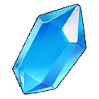
as possible: the ranking and rewards are counted by them.How to get in
No registration — free entry. On Sunday during match hours tap the crystal button at the bottom left of the main screen — and you get into the valley. There are four matches: 02:00, 09:00, 18:00 and 23:00 server time (07:00, 14:00, 23:00 and 04:00 Moscow), each lasts 30 minutes.
 Skill Crystal — drops from Plague Rats, valley skills are learned with it. Skills only work in the valley and reset by next time.
Skill Crystal — drops from Plague Rats, valley skills are learned with it. Skills only work in the valley and reset by next time.What you see inside the valley
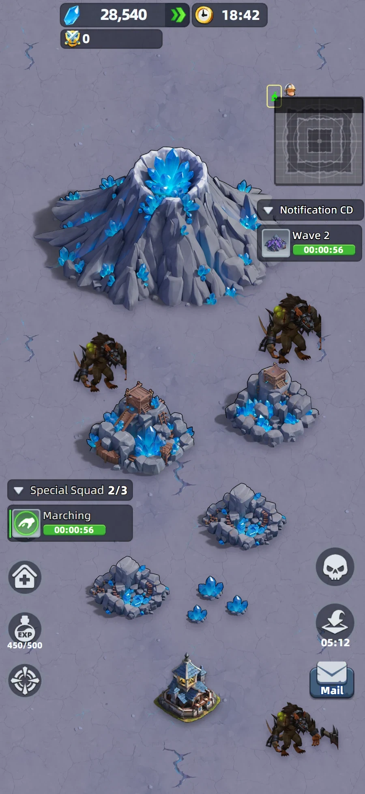
The valley screen is assembled from the game's own pictures (objects and buttons — 1:1, placement on the map — for clarity).
What to do — step by step (pictures — from the valley's in-game «Guide»)

Hit Plague Rats
Two kinds of Plague Rats live in the valley (in the picture — their models from the game: unarmed and with a cleaver). They roam the map — tap a rat and attack. Each one gives Skill Crystals , and valley skills are learned with them (below). The sooner you learn skills, the faster all your gathering goes.

Take a crystal cluster
Tap a cluster — two buttons appear (frames): scout (a spyglass) and attack (swords). A free cluster is guarded by defenders — beat them, and your squad starts gathering. Level 1–3 clusters: the higher, the faster crystals are purified.
A cluster gathered by another player (even an alliance member) can be taken — its crystals scatter as shards around it.
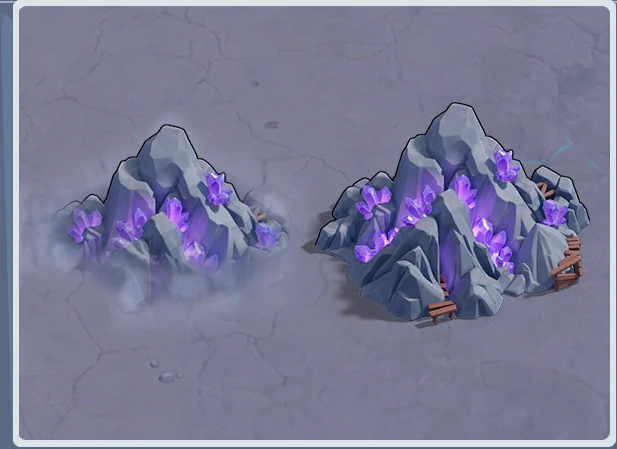
Instant clusters
Special clusters where crystals are mined very fast. They appear in six waves — at minutes 10, 11, 12, 20, 21 and 22 (the time is shown on the right in «Notification CD»). Keep a free squad ready to make it.
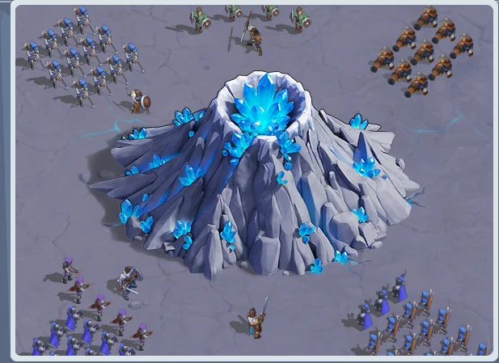
The Sacred Cave in the center
For the first 23 minutes it is protected. Then everyone can capture it, but each player sends only one team there. The top 10 by capture ranking get a big batch of Purified Crystals straight into their total.
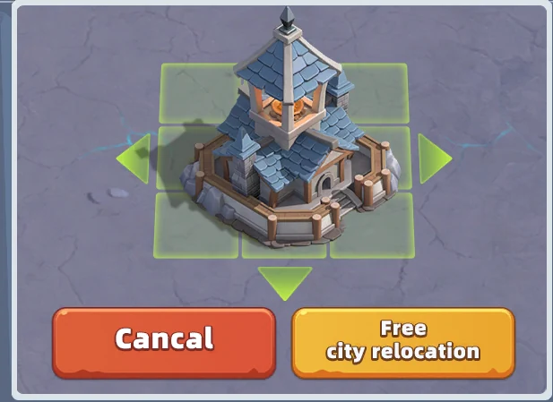
Free Relocation
In the valley the city is moved for free once every 360 seconds: pick a spot and tap «Free Relocation» (frame). During the cooldown a move costs a targeted relocation item, each next one costs 1 more, but no more than 5.

Player cities can't be attacked
In the valley the scout and attack buttons on another city are crossed out (frames): main cities are off limits. Fights are only for clusters and the cave. Your own troops are not spent — the game gives a squad based on your Barracks capacity, of the highest available rank.
Don't keep going where you lose. Each failed attempt to take a cluster gives a hero a «failure». Failures stack, and after several in a row the hero gets a debuff (shown on the skull button). Failures wear off over time: when the timer ends — minus one.
Valley skills — what to choose
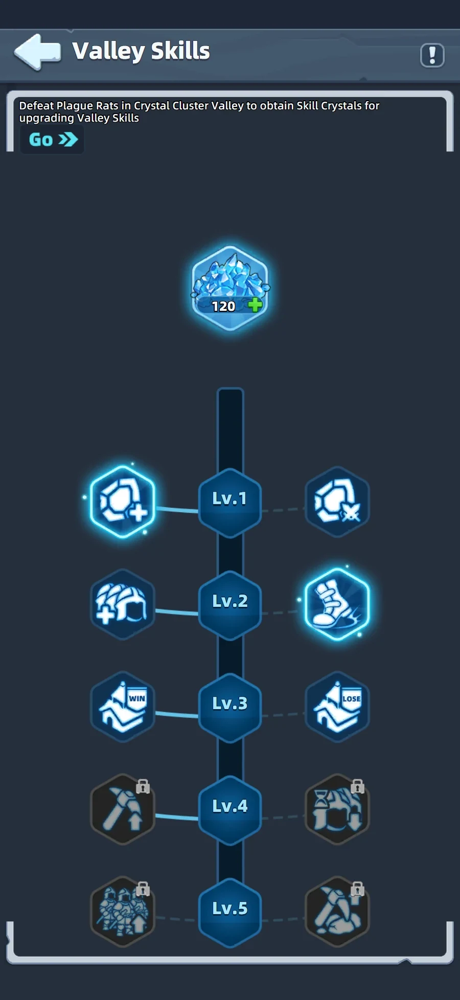
At the top — Skill Crystals (frame), below — 5 levels; the chosen skill glows.
Each level has two skills, and you can choose only one. Levels 1–4 are passive (they work by themselves after learning), level 5 is active and must be tapped manually. Learned with Skill Crystals.
| Level | Skill 1 | Skill 2 |
|---|---|---|
| 1 |  Crystal Surge — periodically gives 1,080 Purified Crystals Crystal Surge — periodically gives 1,080 Purified Crystals |  Plague Rat Hunter — +1,500 crystals for each Plague Rat killed Plague Rat Hunter — +1,500 crystals for each Plague Rat killed |
| 2 |  Force Expansion — hero march capacity +50 Force Expansion — hero march capacity +50 |  Swift March — march speed in the valley +25% Swift March — march speed in the valley +25% |
| 3 | Valley Plunder — +5,000 Purified Crystals when capturing a vein (once every 60 s) | Valley Vigil — +5,000 Purified Crystals on a failed capture attempt (once every 60 s) |
| 4 |  Crystal Mining — gathering from clusters 15% faster Crystal Mining — gathering from clusters 15% faster | Iron Will — debuffs 30 s shorter |
| 5 |  Valley Awakening (tap) — hero damage +15% for 60 s, cooldown 300 s Valley Awakening (tap) — hero damage +15% for 60 s, cooldown 300 s |  Crystal Resonance (tap) — gathering from clusters +50% for 60 s, cooldown 300 s Crystal Resonance (tap) — gathering from clusters +50% for 60 s, cooldown 300 s |
Names and numbers are from the game itself. If you mostly gather — take gathering skills (Surge, Swift March, Mining, Resonance). If you take clusters from others — Valley Plunder and Valley Awakening.
Canyon Conquest
Alliances fight on the three lanes of the canyon. All you need to do is sign up and choose a lane — battles run by themselves, without you. Troops don't die here and don't take up march queues, so signing up is safe.
How to sign up — step by step
The «Special Event» icon
On the right of the main screen, second from the top in the column of round icons. The «Event» window with tabs opens.
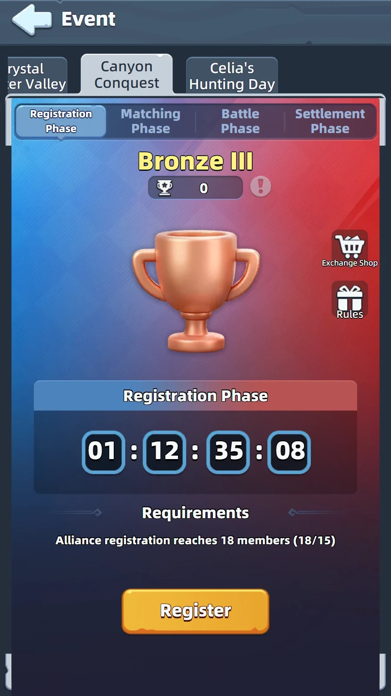
The «Canyon Conquest» tab → «Register»
At the top are four phases: registration, matching, battle, settlement. Below — the alliance medal (Bronze III and up), the timer to the end of the current phase and «Requirements»: how many alliance members have signed up. While the registration phase is on — tap the yellow Register.
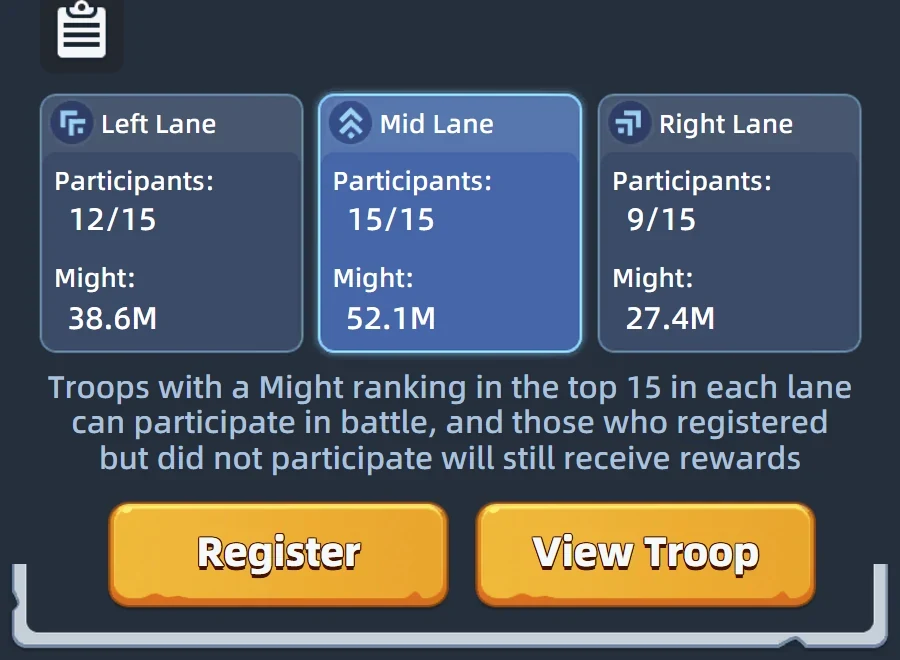
Choose a lane and build a team
At the bottom are three cards: Left, Mid and Right Lane — how many participants and how much Might already stand on each. Tap a lane (it lights up) and then «Register» — you pick heroes for the team. If you don't know where — go Mid: the leaders will move you later. «View Troop» — see who stands where.
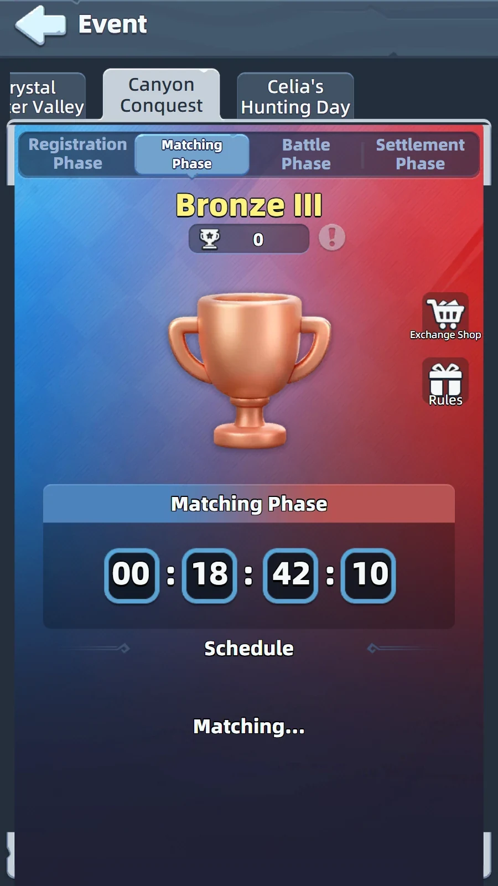
Matching, battle and settlement phases
After signing up the tab switches to the «Matching Phase» (frame): the timer shows how long until matching ends, below is the «Schedule» — while matching it says «Matching…», then the rounds, the rival alliance and the time of each battle appear.
In the «Battle Phase» battles on the three lanes run by themselves: before a battle leaders can swap teams between lanes, after it — view the «Match History». In the «Settlement Phase» everyone who signed up gets rewards, and the alliance medal goes up or down (Bronze → Silver…).
Expeditions: Expedition Battle, Alliance Expedition, Campaign
The game has three different modes with the word «expedition». The rules below come from the rules windows in the game itself.
Expedition Battle
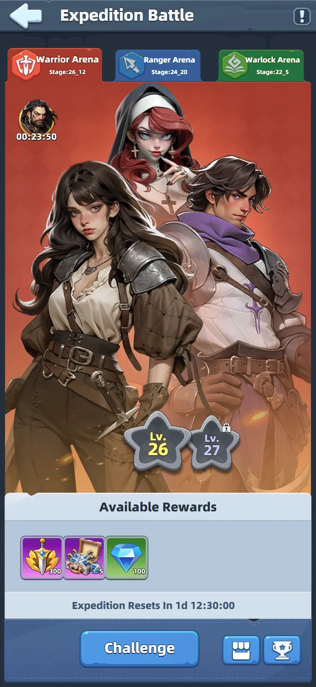
The «Expedition Battle» window. Frames: three battlefields by faction and the «Challenge» button.
Tabs at the top: Warrior Arena, Ranger Arena, Warlock Arena. Each field admits only heroes of its own faction. «Stage: 26_12» under the name — the difficulty level and the stage you reached.
The stars with «Lv.» in the middle are difficulty levels, each with 20 stages. Until the reset one level is chosen for each field, and you can't change it afterwards. The game warns you if your Might is low — then take a lower level.
Clear all stages of a level for the first time — the next one opens right away. Quick challenge (a one-click battle) unlocks at VIP 8 or after the required stage.
(05:00 Moscow). Each challenge after a reset lasts 48 hours — at the bottom of the window «Expedition Resets In». The reward is Expedition Medals: they are exchanged for items in the Expedition Shop (the button with a counter at the bottom right), including a Raven Gear Chest.
During the event heroes below level 100 can be raised by 1 level right away with a special upgrade (but not above the Sanctuary cap). Troops don't die here.
Alliance Expedition
An alliance event against the Blight Camp: «A raging virus has struck a once-valiant legion… Alliance warriors are called to wipe out this fallen legion».
- Started by R4 or R5 if the alliance has more than 10 members with Sanctuary 6+.
- The «Search Blight Camp» button leads to the target. You hit the camp boss — alliance damage accumulates, and damage thresholds give chests to everyone.
- 3 attempts a day, reset at 00:00 server time.
- The stronger the single hit of the ranking leader, the bigger the damage bonus for the whole alliance. The event has suggested heroes — with them, stats in battle against this monster are noticeably higher.
Campaign
Rules from the game itself: only zone 1 is available, the next one opens after clearing the current one — harder, but with more valuable rewards. Each zone has supplies, rewards and monsters: beat the boss and collect the reward to clear the zone. Each zone has its own exploration goals; you can return to cleared zones, but rewards are taken only once.
All 500 stages
Each one shows the recommended Might, the enemy squad and the first-clear reward. ◆ — the stage has a chest (hover to see what is inside). Numbers are from the game's tables.
Loading stages…
Idle income
While you are out of the game, the Campaign gives a reward every 5 minutes. The income level grows as you clear stages.
Other events
Pandemic Experience (nurses)
Once every 2 weeks, right after «Celia's Hunting Day». Lasts 3 days. At the start you choose a difficulty. The task is to kill 30 nurses, from level 1 to 30 (the nurse button at the bottom left during the event).
The more alliance players kill all their nurses, the more levels of the Rat Doctor open for the alliance — it is hit with rallies at a time set by R4/R5.
If the previous level was hard — don't raise the difficulty, you may not clear it at all.
Gear Upgrade
On Saturdays and Sundays (one reward for two days). The task is to upgrade heroes' gear. Easy and a must: save Gearstone for the weekend.
Recluse Merchant
A shop for event coins. Coins come from the neighboring «Recluse's Enigma» tab: a map of 15 quests for 7 days (a full row or column opens a chest, all 15 — a super chest). Later, in the same place, «Path of the Recluse» — coins for Falcon Quests, Covert Operations and monsters.
- The first item is always free, the second and third are discounted.
- The shop can be refreshed 8 more times a day: 2 for free, then +10 crystals for every 2 (120 in total). After each refresh there is a free item again.
- The most valuable items are chests for awakening heroes and their weapons.

A new player's first-week events
The healing event (7 days): the left reward branch is free, the right one is paid. The Survival Battle opens from day 3. Final Dawn — you need 4.6M Might in a week; free players should just take what they can.
Holiday events
For holidays the game turns on a whole set of events at once — they appear as a separate holiday button on the main screen, in the column of icons on the right. All holidays work the same way, only the names and items change. Below is what each set contains, in the game's own words.
How any holiday works — 5 parts
Gingerbread, masks, fish, cupcakes — you «collect them in the Falcon Tower, from resource monsters, elite Blight, covert squads and Wandering Blight». There is a daily limit; unused limit carries over to the next day.
You hand in what you collected to the shared event (a feast, a tasting, a gown fitting, a carnival). The bar is shared by the whole server: everyone earns experience together — the level grows, and everyone collects the level rewards.
You spend event coins on a draw; each draw gives points and phase rewards. The 5x mode spends 5 times more coins and gives 5 times more. Unused coins turn into speedups after the end: 1 coin = 30 universal 1-minute speedups.
Exchanging event currency (hats, tokens, pirate gold) for items. The currency comes from the draw and packs.
Daily quests give points and rewards; forgotten rewards for a day arrive by mail the next day. Epic and mythic pass rewards are paid.
You tap cards — they go into 7 slots, three matching ones disappear. «Remove», «Return», «Refresh» help. If all 7 slots fill up — the stage is failed.
Halloween
«Masquerade Ball» — a field of 26 squares, dice for Halloween coins; item squares level up, and blessed ball chests appear on the field.
Also: «Trick-or-Treat» (quests for candy), «Mask Crafting» → «Gown Fitting» (shared bar), «Halloween Bazaar» (exchanging Magic Hats), «Phantom Treasure» (three cards), «Halloween Cookie».

The Moon Festival (Full Moon Night)
«Starry Promise» — a draw for Moon coins. «Mooncake Making» → «Mooncake Tasting» (shared bar), «Starry Bazaar» (exchanging star-moon tokens), «Jade Rabbit's Elixir» (quests), «Moon Shadow Secret» (three cards), «Jade Rabbit's Blessing».
In 2026 the Moon Festival started on 21 September.

The pirate festival
«Pirate's Game» — a draw for Anchor coins. «Delicious Hunt» (sea fish) → «Grand Feast» (shared bar), «Pirate Market» (exchanging Pirate gold), «Pirate's Mythic Treasure» (quests for cutlasses), «Buried Treasure» (three cards), «Deep Sea's Gift».

Easter
«Easter Egg Hunt» — 7 days, each day a new pack with a golden hammer; the hammer breaks an egg, 7 prizes in total, no repeats. Unused hits burn.
Also: «Easter Celebration» (quests and levels) and «Art Market» (exchanging flower cards).

The banquet festival
«Lost Card» — quests for Playing cards. «Wondrous Toy Box» (7 days, Toy keys open boxes, Teacups inside) → «Teacup Market» (exchanging Teacups). «Banquet Preparation» (Cupcakes) → «Sweetheart Banquet» (shared bar).
Christmas and New Year
Christmas: «Christmas Carnival» (you hand in Christmas lights — shared server bar), «Gift Defense» (you hit the Christmas Thief and Christmas Elves with event items), «Christmas Pass», «Christmas Shop».
New Year: «New Year Fireworks Show» (you launch fireworks; at 100% energy — a fireworks show with a random reward), «New Year Celebration» (quests for points), «New Year Pass», «New Year Shop».
Halloween: «Masquerade Ball» — what it looks like (pictures from the in-game «Instructions»)
«This is a hall of 26 squares guarded by the Pumpkin Ghost. Every step here brings a surprise. Trust the dice.» A roll costs Halloween coins: normal (1 die) or double (2 dice; rewards aren't doubled, progress is the same).
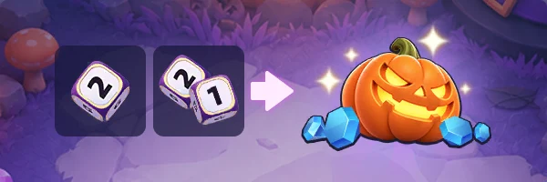
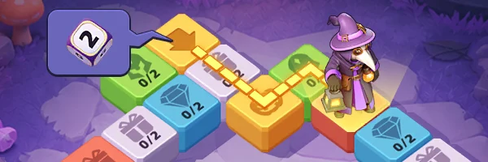


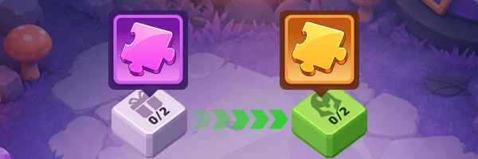

The main holiday rule: holiday coins aren't wasted — after the end they turn into speedups by themselves. But holiday items for handing in and hammer hits burn: hand them in before the event ends.
More events found in the game
These events exist in the game itself, but guides barely write about them. Everything below is checked against the text inside the game, not other websites.
Blighted Countess
This is not a separate event: the Countess appears on the map during the «Celia's Hunting Day» event (below). She has 12 levels, from 1 to 12.
How to find her: tap the magnifier («Search») at the bottom left and choose «Blighted Countess» in the target list — the game takes you to the nearest one.
How to hit her: only with a rally. Nobody goes at her alone: she is a full alliance monster, not regular Blight.
Pick a level your alliance can handle: each next one is noticeably tougher.
Wishing Wheel
A roulette. You spin it with «Wish Coins» — a separate item, that's exactly what it is called, and it is only needed here.
There is a daily attempt limit: the game shows «Daily Attempts: 3» and won't let you spin more. Used them up — it says «Daily draw limit reached».
A big prize win is announced in chat to the whole server.
Sometimes a «Blessing Wheel» runs alongside — the same thing, but for «Blessing Coins». These are different wheels and different coins, don't mix them up.
Celia's Hunting Day
An event about wiping out Blight. The game says: «Join forces with Celia to eradicate evil. Complete rally quests to get rare rewards».
What to do: hit Blight from level 1 to 20 with rallies. Completing goals opens «Celia's Chest» and a bonus reward on top.
Check progress and collect rewards in the event window, with the «Go» (jump to the target) and «Claim» buttons.
When it happens: the event lasts 2 days, and per day the alliance can launch up to 20 rallies on the Blighted Countess. It comes once every 2 weeks: first Celia's Hunting Day, right after it «Pandemic Experience» begins. After the Era of Revival begins, the «Claire's Inner Demon» event takes its place.
This is not the «Hunt Battle»: that one is started by R4/R5 on alliance territory, while this one runs by itself.
Dwarven Mine
You dig down floor by floor. One dig = one Dwarven Pickaxe; pickaxes come from quests, and quests refresh every day at 00:00 server time (05:00 Moscow).
The main rule: before digging, choose the reward for the current floor — otherwise you dig blind.
The more you dig on one floor, the higher the chance of a special reward: after 3 digs it grows 5-fold, after 6 — 10-fold, after 9 — 30-fold. And on some floors the next dig gives a special reward guaranteed.
Separate rewards on floors 5, 10, 20, 30, 40, 60, 80 and 100. The event goes down to floor 200.
Surprise Encounter
An adventure for Diamonds. One adventure a day is free — always worth doing.
Each adventure surely gives an item and may give a surprise chest. Chests open with Surprise Emblems, with a 5% chance to double the reward on opening.
The trap: you can hold no more than 4 unopened chests. Got 4 — new ones stop dropping, and free adventures are wasted. Open them on time.
Two shop events — only for spenders
Strange Bazaar
«Strange Coins» are given for buying packs with money, then you exchange them for items. Unspent coins don't burn and stay until next time.
A free player has nothing to do here, but nothing to lose either: the coins are kept.
Blades Out
Same thing: «Stone Blades» are given for buying packs, packs refresh every day at 00:00 server time. A purchase gives as many VIP points as regular Diamond packs.